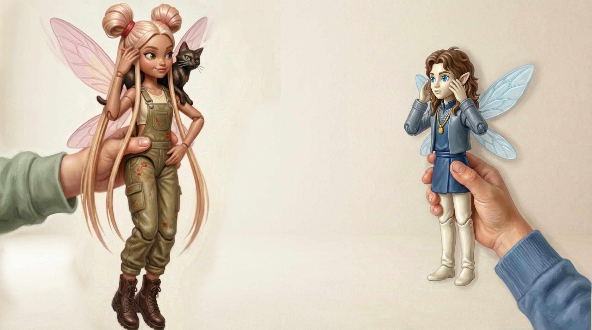

Je parle
juste un peu…
— Je parle juste un peu…
Hover over a word to reveal its meaning — or tap it on mobile.
parle
speak / am speaking
Juste un peu… — Nagar isn't being modest out of politeness. She genuinely only knows a few words. The ellipsis (…) matters here: she trails off, a little embarrassed, a little proud. It's a very natural way to say "I'm not fluent, but I'm trying."
How French -er verbs work (present tense)
je
+ -e
je parle
tu
+ -es
tu parles
All regular -er verbs follow this exact pattern — and there are thousands of them. Parler (to speak), chanter (to sing), marcher (to walk), aimer (to love)… same endings, every time.
Pronunciation tip: the final -e and -es are both silent. This means the verb alone — parle and parles, without the pronoun — sounds completely identical. There is no audible difference whatsoever between the two conjugated forms. The only way to tell them apart is the subject pronoun (je or tu). This is exactly why subject pronouns are never optional in French: drop je or tu, and the sentence becomes ambiguous — or simply meaningless.